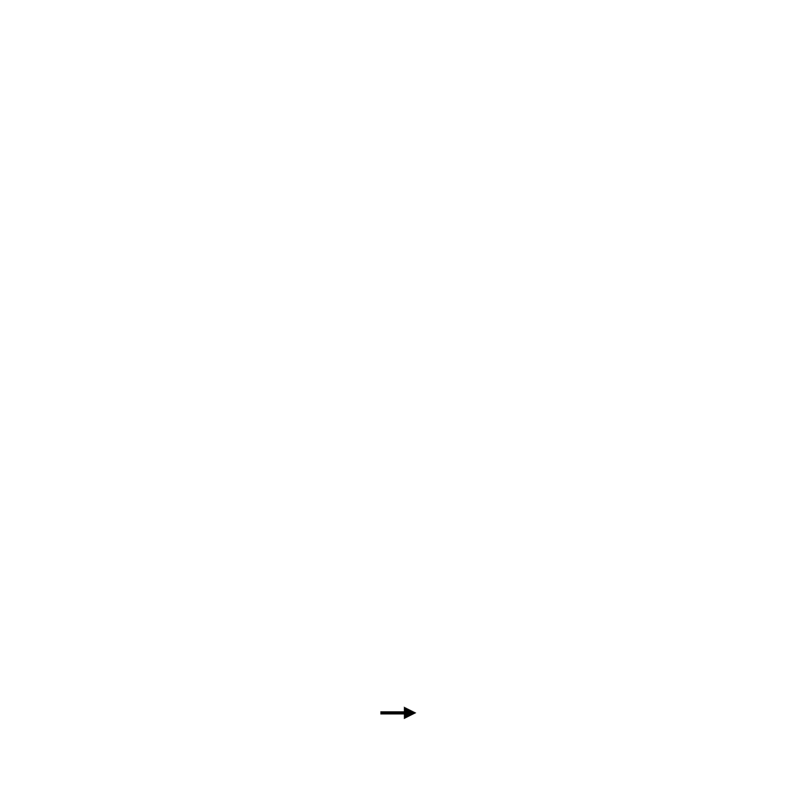
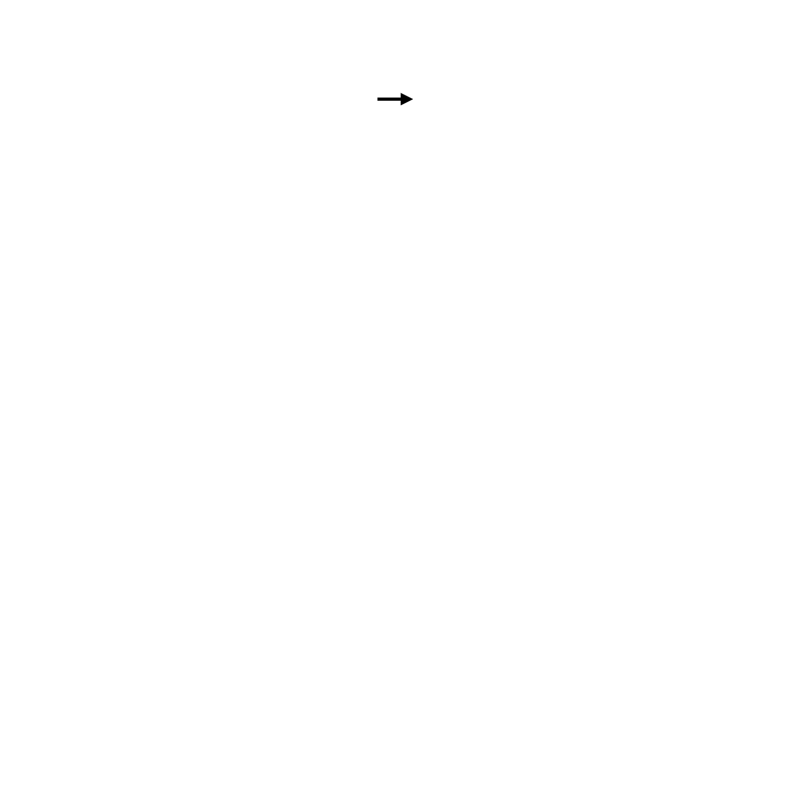

<!DOCTYPE html>
<html>
  <head>
    <title>Attention cueing</title>
    <script src="jspsych-6.3.1/jspsych.js"></script>
    <script src="jspsych-6.3.1/plugins/jspsych-html-keyboard-response.js"></script>
    <link href="jspsych-6.3.1/css/jspsych.css" rel="stylesheet" type="text/css">
  <style>
  </style>
  </head>
  <body></body>
  <script>
  
  var timeline = []

//------------------------- Symmetry Images
  var fixation_grid    = "";
  var cue_neutral      = "";
  var cue_topleft      = "";
  var cue_middleleft   = "";
  var cue_bottomleft   = "";
  var cue_bottommiddle = "";
  var cue_bottomright  = "";
  var cue_middleright  = "";
  var cue_topright     = "";
  var cue_topmiddle    = "";
  
  var leftarrow_topleft      = "";
  var leftarrow_middleleft   = "";
  var leftarrow_bottomleft   = "";
  var leftarrow_bottommiddle = "";
  var leftarrow_bottomright  = "";
  var leftarrow_middleright  = "";
  var leftarrow_topright     = "";
  var leftarrow_topmiddle    = "";
  
  var rightarrow_topleft      = "";
  var rightarrow_middleleft   = "";
  var rightarrow_bottomleft   = "";
  var rightarrow_bottommiddle = "";
  var rightarrow_bottomright  = "";
  var rightarrow_middleright  = "";
  var rightarrow_topright     = "";
  var rightarrow_topmiddle    = "";
  

  var fixation = {
    type: 'html-keyboard-response',
    stimulus: fixation_grid,
    choices: jsPsych.NO_KEYS,
    trial_duration: 1000
  }
  
  var cue_presentation = {
    type: 'html-keyboard-response',
    stimulus: jsPsych.timelineVariable('cue'),
    choices: jsPsych.NO_KEYS,
    trial_duration: 250
  }
  
  var target_presentation = {
    type: 'html-keyboard-response',
    stimulus: jsPsych.timelineVariable('target'),
    choices: ['ArrowLeft', 'ArrowRight'],
    trial_duration: 3000
  }
  

  var trial_procedure = {
    timeline: [fixation, cue_presentation, target_presentation],
    timeline_variables: [
      // Cued left arrow trials
      {cue: cue_topleft,      target: leftarrow_topleft},
      {cue: cue_middleleft,   target: leftarrow_middleleft},
      {cue: cue_bottomleft,   target: leftarrow_bottomleft},
      {cue: cue_bottommiddle, target: leftarrow_bottommiddle},
      {cue: cue_bottomright,  target: leftarrow_bottomright},
      {cue: cue_middleright,  target: leftarrow_middleright},
      {cue: cue_topright,     target: leftarrow_topright},
      {cue: cue_topmiddle,    target: leftarrow_topmiddle},
      // Cued right arrow trials
      {cue: cue_topleft,      target: rightarrow_topleft},
      {cue: cue_middleleft,   target: rightarrow_middleleft},
      {cue: cue_bottomleft,   target: rightarrow_bottomleft},
      {cue: cue_bottommiddle, target: rightarrow_bottommiddle},
      {cue: cue_bottomright,  target: rightarrow_bottomright},
      {cue: cue_middleright,  target: rightarrow_middleright},
      {cue: cue_topright,     target: rightarrow_topright},
      {cue: cue_topmiddle,    target: rightarrow_topmiddle},
      // Uncued left arrow trials
      {cue: cue_neutral,       target: leftarrow_topleft},
      {cue: cue_neutral,       target: leftarrow_middleleft},
      {cue: cue_neutral,       target: leftarrow_bottomleft},
      {cue: cue_neutral,       target: leftarrow_bottommiddle},
      {cue: cue_neutral,       target: leftarrow_bottomright},
      {cue: cue_neutral,       target: leftarrow_middleright},
      {cue: cue_neutral,       target: leftarrow_topright},
      {cue: cue_neutral,       target: leftarrow_topmiddle},
      // Uncued right arrow trials
      {cue: cue_neutral,       target: rightarrow_topleft},
      {cue: cue_neutral,       target: rightarrow_middleleft},
      {cue: cue_neutral,       target: rightarrow_bottomleft},
      {cue: cue_neutral,       target: rightarrow_bottommiddle},
      {cue: cue_neutral,       target: rightarrow_bottomright},
      {cue: cue_neutral,       target: rightarrow_middleright},
      {cue: cue_neutral,       target: rightarrow_topright},
      {cue: cue_neutral,       target: rightarrow_topmiddle},
    ],
    randomize_order: true,
    repetitions: 3
  }
  
  timeline.push(trial_procedure)
  
  jsPsych.init({
    timeline: timeline
  })
  
  </script>
</html>